不义务
教育教科书
七、八年级
第一册（七上）
（七、八年级第一册）
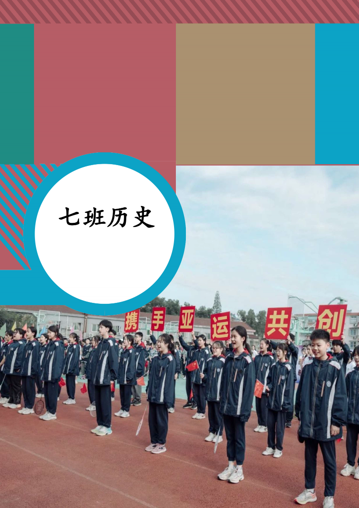
不义务教育教科书
七、八年级
第一册（七上）
MG编写
·宁波·
目录
七上


第１课 七班的开始 2
第２课 七班的选举 8
第３课 运动会 13


第４课 语文，数学老师的上课风格 17
第５课 英语，科学，社会老师的上课风格 19
第６课 班主任的上课风格 20


第 7 课 期中考试 22
第 8 课 期末考试 23
第 9 课 疫情的影响 24
第10 课 学校的简介 27
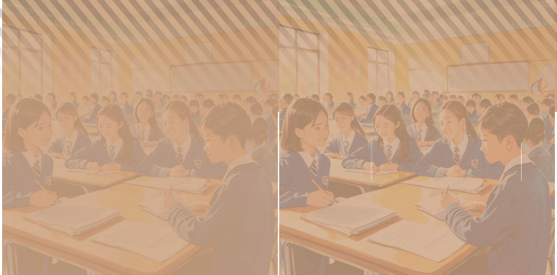
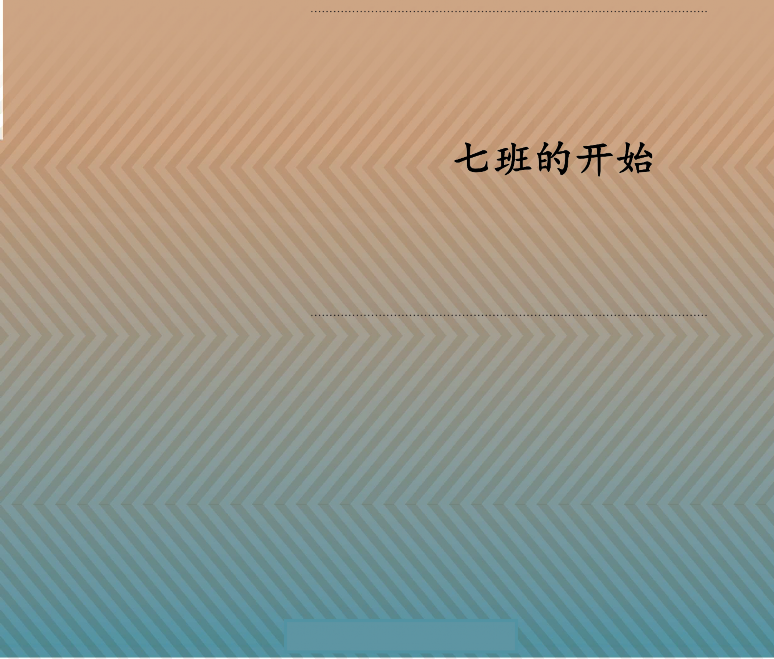
第1 课
七班的建立
2022年9月1日,庄桥中学2022新生陆续进入校园,其中以38名同学的七班,便是我们介绍的对象。这次入学代表了什么?为什么说庄桥中学2022新生陆续进入校园是七班的开始?
七班的建立
七班①,在9月1号隆重的开学典礼中开始了。七班一共有38名②同学,班主任为赵老师。其中还以其他的几名老师成为了7班的老师团队③。
① 七班,当时称707班。
② 38名,这是指当时的人数,后来加入了一名新同学,为39人。
③ 老师团队共七人。
8 七班历史（七、八年级） 七、八年级 第一册
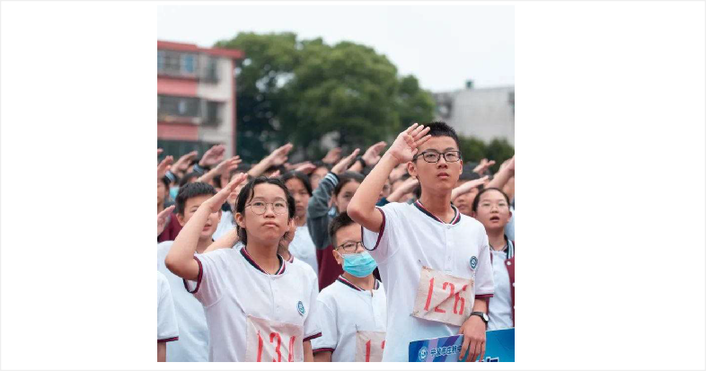
图 707运动会
人物扫描
赵老师,七班的领导者。心理老师。主导过很多改革,使七班站立在庄中舞台之上。
第1课 七班的建立 9
七班的建立,标志这这个占全年级七分之一人数的班级出现了。打下了七班后期的发展进程的基 础。这个班级站起来了！
第2 课
七班的选举
七班建立后,迫切需要一个能辅佐班主任的领导阶层。班干部选举就作为重要的事提上议程。
开始选举
其中确定，班长：洪凯乐，语文课代表：罗雨
欣，程浩
10 七班历史（七、八年级） 七、八年级 第一册
数学课代表：赵亦煊，陈歆怡 英语课代表：朱子祥，李贞媛 科学课代表：严文博，傅孟泽 社会课代表：周诗雨，黄丹 美术课代表：张家轩 音乐课代表：王可欣 劳动委员：吴茂凡，邵钰彬 电教委员：王川鋆 纪律委员：程语欣 领读 员：王堰 宣传委员：陈昕妍，刘佳慧 心理委员： 胡萌
萌，潘伟 学习委员：杨张雯
问题思考
如果没有这次选举，七班能够发展吗？
（无排列顺序）
七班班干部选举时的场面（AI生成，不代表真实画面）
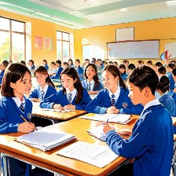
第2 课 七班的选举 11
选举确立了以赵老师为中心的班干部集体正式形成， 虽然这次选举作为七班第一次选举，存在部分问题，但成功的使七班走上了正轨。
/七班的选举/
课后活动
根据选举表，说明这次选举在当时有什么影响。
在这次选举中，没有下面哪项职位？
（ ）
A.科学课代表 B.班长
C.讲台整理员 D.劳动委员
12 七班历史（七、八年级） 七、八年级 第一册
第3 课
运动会
2022年9月29日，校第56届运动会开幕，我七班健儿在这次运动会中取得了优异的成绩。到底有哪些呢？本课将会详细介绍。
开幕式
我七班学生以“少年中国说”为主题，展现了新时代少年的风采。最终夺得了全校开幕式第四名的好成绩。
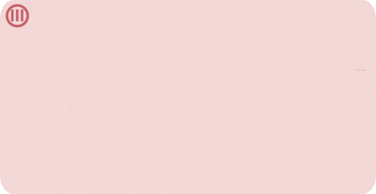
材料研读
任公曰：造成今日之老大中国者，则中国老朽之冤业也。制出将来之少年中国者，则中国少年之责任也。
彼老朽者何足道，彼与此世界作别之日不远矣，而我少年乃新来而与世界为缘。如僦屋者然，彼明日将迁居他方，而我今日始入此室处。
将迁居者，不爱护其窗栊，不洁治其庭庑，俗人恒情，亦何足怪！若我少年者，前程浩浩，后顾茫茫。
中国而为牛为马为奴为隶，则烹脔鞭棰之惨酷，惟我少年当之。 中国如称霸宇内，主盟地球，则指挥顾盼之尊荣，惟我少年享之。于彼气息奄奄与鬼为邻者何与焉？彼而漠然置之，犹可言也。
我而漠然置之，不可言也。
使举国之少年而果为少年也，则吾中国为未来之国，其进步未可量也。
使举国之少年而亦为老大也，则吾中国为过去之国，其澌亡可翘足而待也。
(续下页）
第3课 运动会 13
洪凯乐夺得冠军
我班洪凯乐夺得了800m的冠军，这是我班夺得的首个冠军，
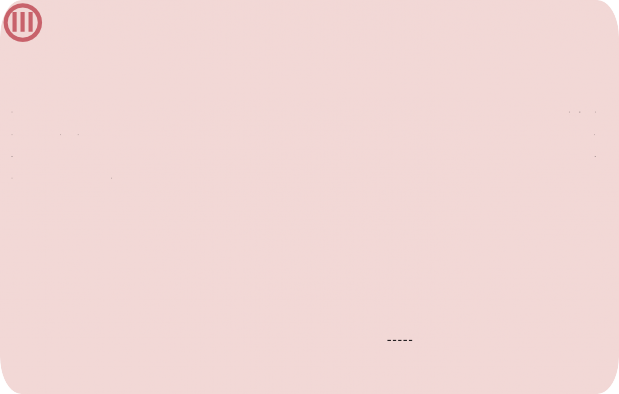
材料研读
故今日之责任，不在他人，而全在我少年。
少年智则国智，少年富则国富；少年强则国强，少年独立则国独立；少年自由则国自由；少年进步则国进步；少年胜于欧洲，则国胜于欧洲；少年雄于地 球，则国雄于地球。
红日初升，其道大光。河出伏流，一泻汪洋。潜龙腾渊，鳞爪飞扬。乳虎啸 谷，百兽震惶。鹰隼试翼，风尘翕张。奇花初胎，矞矞皇皇。干将发硎，有作其芒。天戴其苍，地履其黄。纵有千古，横有八荒。前途似海，来日方长。美哉我少年中国，与天不老！壮哉我中国少年，与国无疆！“三十功名尘与土，八千里路云和月。莫等闲，白了少年头，空悲切。此岳武穆《满江红》词句 也，作者自六岁时即口受记忆，至今喜诵之不衰。自今以往，弃“哀时客”之名，更自名曰“少年中国之少年”。
梁启超《少年中国说》
这几段话中哪些是七班表演的内容？你能把它们标注出来吗？
振奋了全班的信心。
14 七班历史（七、八年级） 七、八年级 第一册
团体项目
运动会第二天下午，团体项目陆续进行。其中，有着跳长绳，我们班获得了第六的成绩，而在引体向上和仰卧起 坐中，我班则分别获得了第五和第六的成绩。
整体不利
虽然不乏有运动员泼洒汗水，但由于七班整体水平较 低，导致整个运动会对七班不利。在最后的闭幕式上，七班获得了倒数第一的成绩，代表着这一次运动会的失败。虽然运动会没能取得好的成绩，但运动的心已经在七班每个人心中植下了种子。
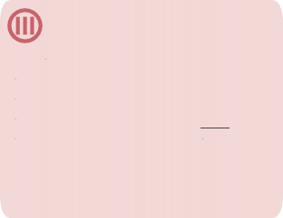
材料研读
长跑永远是侯庆国的主场！
标语
你认为长跑是侯庆国的主场吗？如果不是他，那你觉得是谁呢？
第3课 运动会 15

/运动会/
课后活动
在《少年中国说》中， 找出七班在开幕式上表演的部分。
16
历史（七、八年级） 七、八年级 第一册
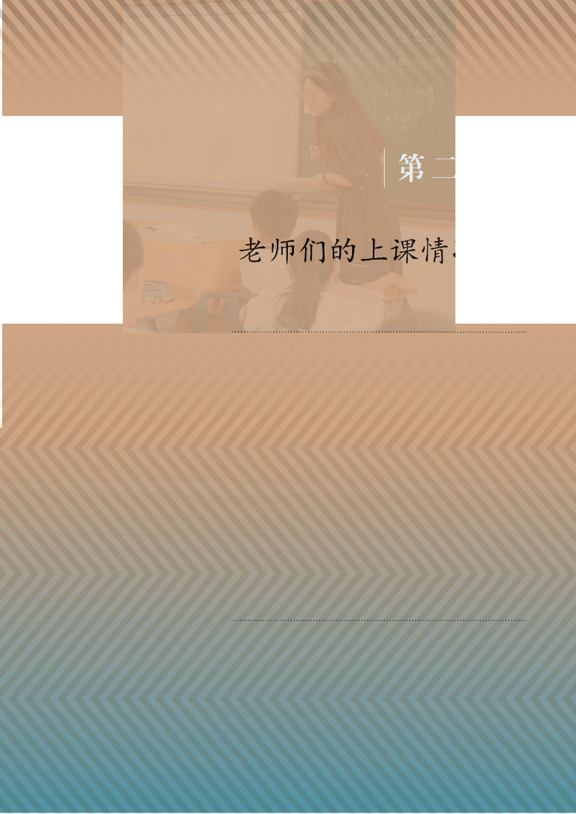
第4 课
语文，数学老师的上课风格
语文老师，即樊老师，数学老师，即周老师。这两位老师有什么特点呢？我们将会在这课中知道。
樊老师
樊老师是七班的语文老师。她被同学们认为是非常和善的老师。她的语文水平非常高，有丰富的教学经验。
周老师
周老师是七班的数学老师。她被同学们认为
材料研读
七班同学是这样认为樊老师的：
语文老师的常说的话就是“静坐两分钟”和“电脑开一下”。
同学
怎么看待他的说法？你觉得
静坐有什么用处？
是非常严格的老师。但是部分同学认为她大部分时间是和善的。
17
历史（七、八年级） 七、八年级 第一册
课后活动
1．下列关语文数学老师，正确的是
（
）
① 语文老师被同学们认为比较和善
② 数学老师被同学们认为比较严格
③ 语文老师的语文水平高
④ 有部分同学认为上课睡觉是好的
Ａ. ①②③
Ｂ. ②③④
Ｃ. ①②④
Ｄ. ①②③④

知识拓展
七班学的第一首古诗
观沧海
曹操
东临碣石，以观沧海。水何澹澹，山岛竦峙。树木丛生，百草丰茂。秋风萧瑟，洪波涌起。日月之行，若出其中；星汉灿烂，若出其里。幸甚至哉，歌以咏志。
/语文，数学老师的上课风格/
材料研读
七班同学是这样认为周老师的：
周老师太严格了，我上课一闭眼睛她就要叫我。有同学反驳：
你自己不睡觉不就好了吗？每次都迷迷糊糊的。
—同学
怎么看待他的说法？你觉得上课睡觉正确吗？
第4课 语文，数学老师的上课风格18
第5 课
英语，科学，社会老师的上课风格
在上节课的学习中，我们知道了语文和数学两位老师的风格，这节课，我们将继续学习其他三位主课老师的风格：英语老师（董老师），科学老师（韦老师）和社会老师（袁老师）。
董老师
董老师是七班在七上时的英语老师，她后来因为个人原因，离开了七班，但七班的学生对她的英语教学仍然向往。
韦老师
韦老师是七班在七年级时的科学老师，在她的教学下，七班的科学平均分能处在较高水平，是七班当时为数不多强劲学科。后来，她因为调整，离开了七班，但是，她 对七班科学的影响是非常大的。
袁老师
材料研读
七班同学在韦老师离开七班后这样说：
韦老师走了后，我的科学可能就没有那么好了。
—同学
怎么看待他的说法？
袁老师是七班在七年级时的社会老师。她的社会教学非常好，使全班大部分人都爱上了社会。
19 七班历史（七、八年级） 七、八年级 第一册
第6 课
班主任的上课风格
班主任，即我们之前提到的赵老师，赵老师作为心理老师，也会教学七班学生。她有什么教学风格呢？
班主任的班会课
赵老师①的第一节心理课则作为班会课讲了他自己的经历和班级的规定。其中，班级的规定有: “建立素质分”，“三静”等，虽然，在当时这些规定并没有实施，但在后来逐一实施和完成了。

① 赵老师，又被同学们叫做班主任或老班
20
历史（七、八年级） 七、八年级 第一册
班主任的后期改革

课后活动
1．制作表格，整理赵老师改革的主要内容。
2．兴趣小组的同学讨论赵老师改革，主要观点如下：
Ａ. 素质分机制无用。
Ｂ. 三静没有得到好的实施。
你同意哪一种观点？请说明理由。
/班主任的上课风格/
赵老师①在后期进行了许多改革和教育，使七班走上了正轨。 :


知识拓展
素质分
七下时，素质分机制初步创立。最初在几个班干部试点，然后发展成为了全班同学
的轮换。素质分机制有效的管理了班级。
21 第6课 班主任的上课风格

第三单元
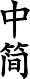 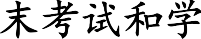
期中考试， 是三年历史中最重要的事件。而在本单元中，我们将学习七上期中和期末考试（又称七上期中考和七上期末考，简称七上中考和七下末考，在本单元后面，我们还会对学校简介进行介绍，来为后面的学习做铺垫。同时，由于疫情，期末考试没有如期进行，这是为什么呢？
第7 课
期中考试（七上）①
期中考试是在三年学习中比较重要的事件。
期中考试的宣布
期中考试在学期中宣布。
期中考试的结果
期中考试的全班最好的成绩是年级第27名，这在现在看来是比较差的。但是期中考试振奋了人心，才有了后面的基础。


① 共六次期中考试，本课介绍的是七上的。
22
历史（七、八年级） 七、八年级 第一册
第8 课
期末考试（七上）
由于疫情，期中考试延期到七下举行，虽然延期了，但是我们班取得了很好的成绩。
期末考试
期末考试全班取得的最好成绩为13名，这是一次非常高的成就。
七班历史（七、八年级） 七、八年级 第一册 23
第9 课
疫情的影响
2022年底，宁波再一次爆发新冠疫情。受此影响，期末考试和一系列事务延期或取消进行。
疫情的爆发
2022年底，宁波市北仑区，鄞州区等地相继出现新冠确诊和无症状感染者。如11月8日，北仑区新增一例确诊病例。这严重影响了学生的健康，
于是，经过江北区区教 1
育局研判决定，对区内所有初中，小学，幼儿园等都进行停课。
疫情防控图片（来源：人民日报）
24 七班历史（七、八年级） 七、八年级 第一册
相关史事
疫情发生时，七班的大部分学生都还
在进行学习。班主任突然过来通知让大家前往会议室进行处理。大家便纷纷回家，来处理疫情。之后，其他班级也陆续回 家，学校开始了全面线上授课。
疫情的影响
因为这次疫情，期中，期末考试延期，而且由于线上教学，所以大部分学生都没有学好。
但是，这次延期也给了更多人发挥的机会。例如，在七下进行的七上期末考试中，我班取得的最好成绩为13名①

① 13名是黄丹取得的成绩。
第9课 疫情的影响 25
问题思考
为什么说疫情的影响给了更多人发挥的机会？
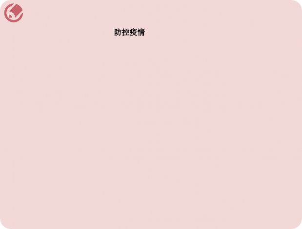
课后活动
1．你认为下列哪些措施是为了
延期期末考试延期期中考试学校改建
的？试在右侧的□中画√。
□
□
□
2．你知道我班在期中，期末考试中取得的最好成绩分别是什么吗？
/疫情的影响/
26 第9课 疫情的影响
第10 课
学校的简介
宁波市庄桥中学创办于1956年，位于宁波市江北区庄桥大街11号，原校名为“宁波市第七初级中学”，2006年9月起为宁波市江北区教育局直属初级中学。
学校的总介
据我校官网显示，学校占地面积19000平方米，建筑面积14000平方米；现有教学班26个， 1000多名学生；教职工近100名。
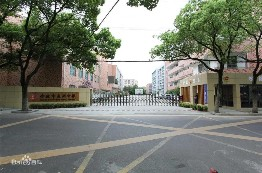
学校概况图（来源：百度百科）
历史（七、八年级） 七、八年级 第一册27
办学历史
1956年，创建宁波市庄桥中学，始校名为“宁波市第七初级中学”，招收初中学生；
1970年，开始招收普通高中班；
1984年秋季，开始招收职业高中班；
1993年，江北区洋市中学并入我校；
2003年，为宁波市教育局直属初级中学；
2006年9月，原庄桥实验学校初中部并入我校；
2006年9月，为宁波市江北区教育局直属初级中学。
七班历史（七、八年级） 七、八年级 第一册 28
知识拓展
http://zqzx.jbedu.net/是庄桥中学的官网。网站官网目前分为首页等多个板
块，但大部分板块长时间未更新。
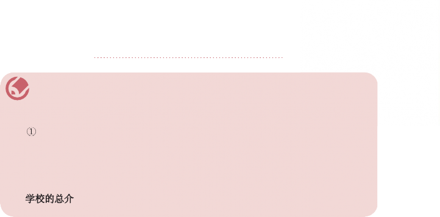
课后活动
1下列事件发生的先后顺序是
创建宁波市庄桥中学 ②洋市中学并入我校
③开始招收职业高中班 ④为宁波市江北区教育局直属初级中学
（
）
Ａ. ④①③②
Ｂ. ④③①② Ｃ. ①③②④ Ｄ. ①④③②
2．
有哪些？
/ 学校的简介/
历史（七、八年级） 七、八年级 第一册 29
后 记
《义务教育教科书 历史》（七〜八年级）
联系方式
：2892491587
编 者
2023 年1 2 月
® BUYIWUJIAOKESHU
QIBANLISHI
QI ZHI BA NIANJI DIYICE QISHANG
历史
印刷产品
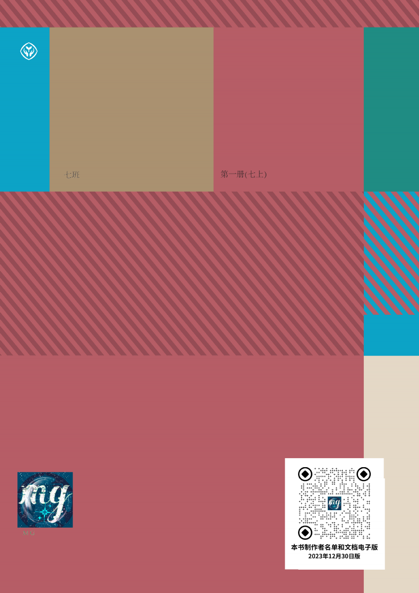